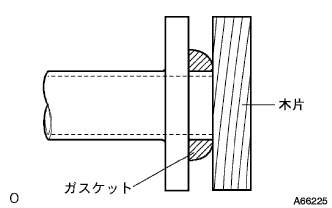

Fouel Tank ASSY installation |
| 1. Fuel tank ASSY installation |
Four bolts are attached to the Fuyer Tank ASSY.
Install the No. 1 Fuuel tank protector.
Attach the parking brake cable clamp.
| 2. Fuel emission tube No.1 connection |
Combine the pipe and the connector shaft and insert it until a click.
| 3. Fuel tank main tube connection |
Combine the pipe and the connector shaft and insert it until a click.
| 4. Fuel tank Tsuifurappe hose connection |
| 5. Briza tube fuel hose No.1 connection |
| 6. Installation of exhaust pipe ASSY FR |
Use caliper to measure the free length of the compression spring.
|  |
The new gasket is gradually driven to the exhaust manifold, using a piece of wood and a hammer.
Attach the exhaust pipe ASSY FR to the exhaust manifold.
Insert a tail pipe into the exhaust pipe ASSY FR via a new gasket.
 |
The new clamp and bolt are the positions of the clamp and tighten the bolt.
Attached two exhaust pipe support No.4.
| 7. Fouel Sakushi -Yonchi Uve ASSY W/Pump & Gauge Installation |
 |
Fuuer Saku Sakujon Uve ASSY W/Pump & Gauge is attached via a new gasket.
| 8. Fuel tank vent tube set plate installation |
 |
Combine the Mark of the Fuuer Saxo Yonchi Uve W/Pump & Gauge and the Fuuel Tank Bent Ubettettate plate, and attach the fuuer tank ventyubocetto with eight bolts.
| 9. Fuel emission tube No.1 connection |
Combine the pipe and the connector shaft and insert it until a click.
After the connection, pull the connector and pipe to confirm that it is ensured.
| 10. Fuel tank main tube connection |
 |
Insert the main chewbu into the plug of the Sakushillon plate and attach the Chiyubujirottip.
| 11. Lear Floor Service Hall Cover Installation |
Use a new butyl tape to attach the rear floor service hall cover.
| 12. Rear seat cushion Assy installation (rear seat cushion fixing type) |
Rena seat cushion assemble the hook at the rear of the rear seat.
Pass the rear seat belt through the rear seat cushion cover and pad back rubber band.
 |
Rena seat cushion Assy The hook at the front of the front.
| 13. Rear seat back Assisted (overall rear seat back is possible) |
Attach the rear seat back associate with two bolts.
 |
Attach two clips.
| 14. Fuel leak inspection |
reference| 15. Exhaust gas leak inspection |